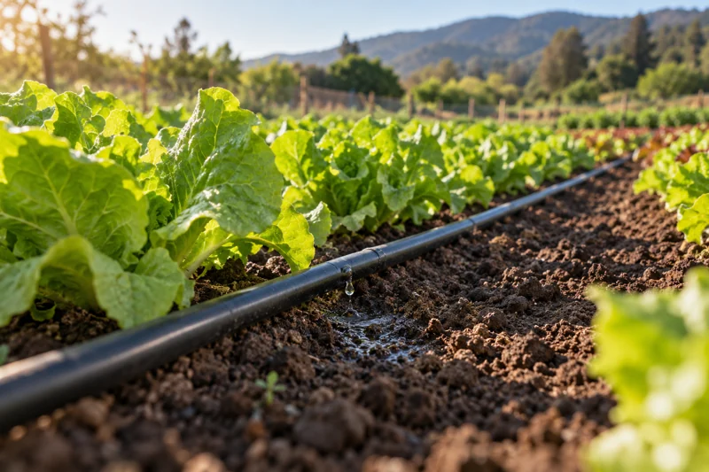

FORMACIÓN AGRÍCOLA · A TU RITMO
Instalación y mantención del riego por goteo
Organiza un croquis y una lista de materiales, selecciona componentes y aprende a comprobar presión, caudal, uniformidad y fallas del sistema.

Lo que aprenderás
- Organiza un croquis y una lista de materiales.
- Calcula caudales y comprueba presión y uniformidad.
- Registra la recepción del sistema y diagnostica cambios.
Para quienes quieren comprender el montaje y la mantención de un sistema de goteo.
Preparación: Operaciones básicas, calculadora y nociones iniciales de riego. Puedes resolver los casos sin equipo real. Complementa el curso de riego agrícola; no sustituye el diseño profesional de instalaciones complejas.
Programa de 12 temas
- Levantamiento del sitio y croquis de instalación
- Caudal disponible y calidad del agua
- Elección de goteros, cintas y espaciamiento
- Sectorización y balance de caudales
- Presión, desnivel y pérdidas de carga
- Cabezal, filtración, regulación y medición
- Tuberías, conexiones y lista de materiales
- Montaje, limpieza inicial y prueba de recepción
- Medición de caudal y uniformidad del goteo
- Tiempo de riego y verificación del humedecimiento
- Mantención preventiva y diagnóstico de fallas
- Presupuesto, entrega del sistema y plan anual
Conoce cómo se aprende
Ver muestra gratuita de este cursoCómo ingresar
- Consulta por WhatsApp el programa, monto y condiciones.
- Coordina el pago y confirma el plazo de activación con el encargado.
- Una vez confirmado, recibirás tu cuenta y acceso al curso comprado.
Certificados de CAMPO EDUCA
Completa las 12 lecciones y aprueba con al menos 21 respuestas correctas de 30 para habilitar los certificados. Son constancias privadas del curso; no equivalen a un título profesional.
Ver diseño de muestra
José Ignacio Farías
Ingeniero Agrícola · Encargado del curso
Coordina las consultas, el registro de estudiantes y la habilitación del aula.
Clases visuales para estudiar y practicar
Los 12 temas suman 492 diapositivas. Las explicaciones se distribuyen por conceptos, con fotografías, tablas editables, ejemplos de campo y cálculos paso a paso. Cada clase incluye su PDF y narración con pausas para responder.
Entrar a mi aula